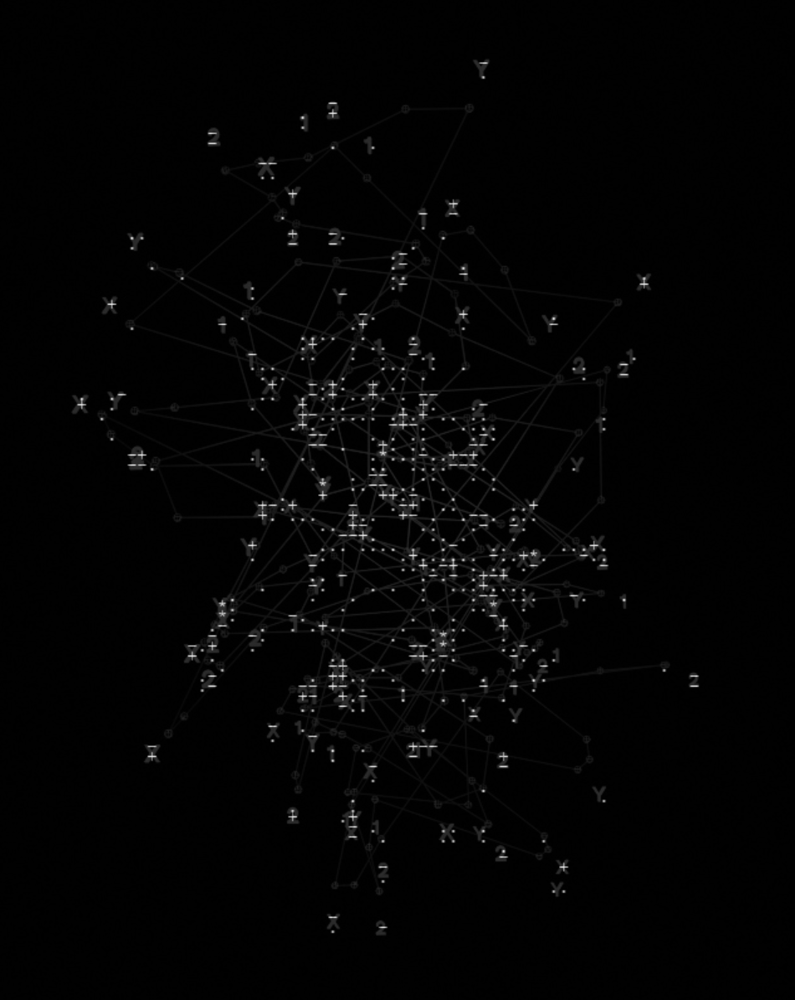

Synthetic data access for research
Contextualizing research reliability loss under synthetic data access.
Context
Describe the motivation and context of the project.
Approach
Explain what you built, tested, or explored.
Outcome
Summarize results, impact, and future directions.
Links
